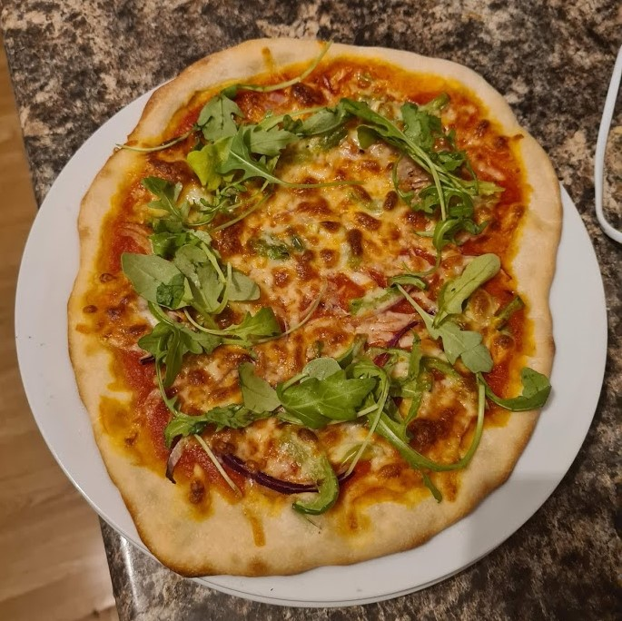
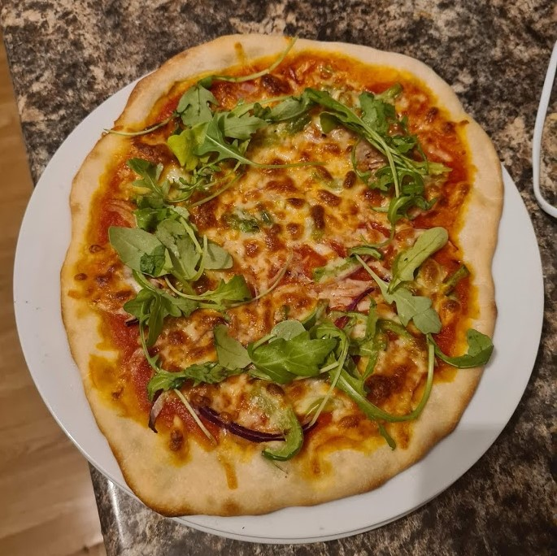

Yummy Vegan & Vegetarian Recipes
Good for the planet! Good for you!
Our goal at Going Green is to encourage people to eat sustainable and delicious food.
Here you can find yummy recipes for vegan and vegetarian food: good for the planet and good for your stomach!

 
